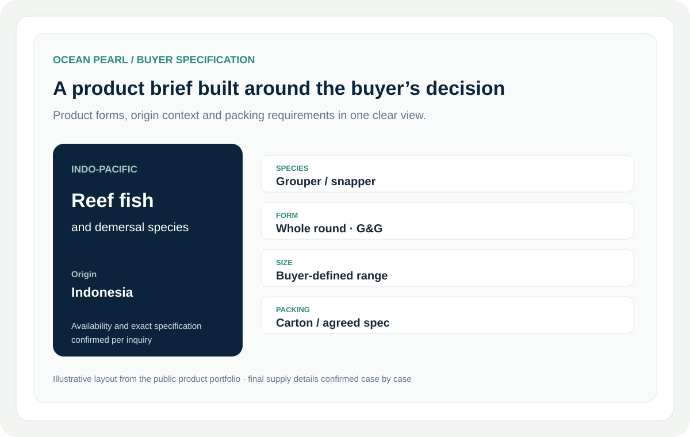
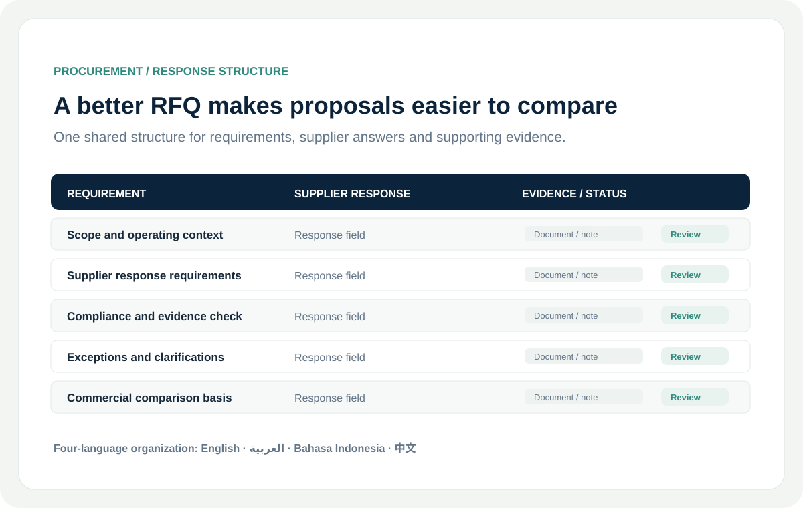
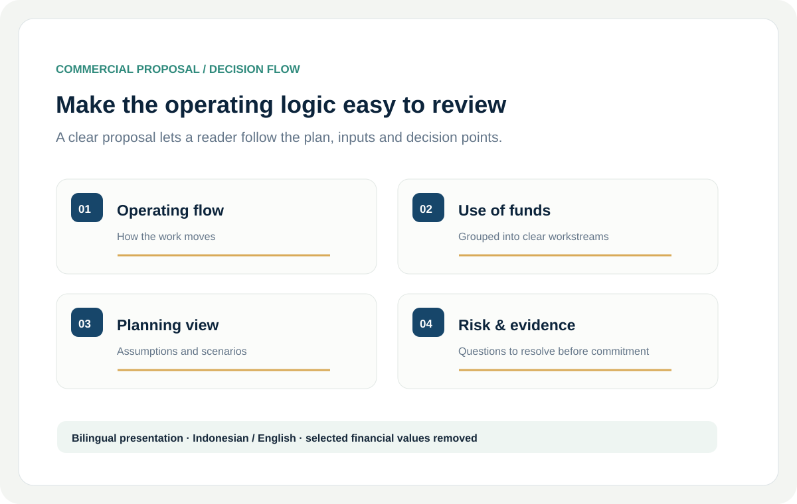

Decision-Ready Research
Market, competitor and supplier research with clear comparisons, source trails and useful next steps.
I turn complex markets, commercial data and business processes into clear decisions, professional deliverables and practical operating systems.

From a market question to a buyer-facing document or a more organized workflow, the focus stays on what a team can use next.
Market, competitor and supplier research with clear comparisons, source trails and useful next steps.
Proposals, RFQs and business materials shaped for clarity, review and confident discussion.
Practical workflow and data systems that help people prioritize work and follow through.
Clear product information and buyer-ready workflows for seafood sourcing and export coordination.
Explore the case ↗
Turn scattered market information into a sourced view that supports a real business decision.
Explore the case ↗
A structured request helps suppliers answer the same questions in a format the buyer can compare.
Explore the case ↗
Make the operating plan, funding logic and decision points clear in a polished bilingual proposal.
Explore the case ↗
A management cockpit that helps an owner see what matters next and coordinate follow-through.
Explore the case ↗
A browser-based learning experience organizes AI-assisted tasks into accessible student and teacher workflows.
Explore the case ↗Organize sources, definitions and comparisons around the question a business needs to answer. Make it easier to see what is known, where it comes from and what deserves a closer look.
Explore research work ↗RFQs, supplier response matrices and bilingual proposals organize the details so people can compare, review and move a discussion forward.
See document work ↗Management visibility, workflow support and learning tools should make the next step clearer. Moza and MagicWords show two ways to put that idea into practice.
See the business cockpit ↗Share the decision, document or workflow you are trying to move forward.